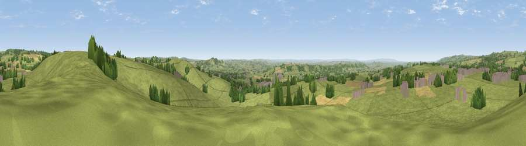

Viewpoint near Prestleigh
#9228 in England · top 16% of its area beats it · near PrestleighThe view, rendered

A 360° render of this exact spot computed from the terrain model, tree cover and land cover — summer colours, afternoon light, calibrated against photographs of famous viewpoints. Real trees, hedges and buildings will differ in detail.
The panorama
Grey silhouette: terrain skyline in each direction (720 bearings, Earth curvature and refraction included). Dashed green: skyline with trees (+15 m) and buildings (+8 m) as obstacles. Blue strip: how far the ground is visible on each bearing.
Where the view opens
Wedge length = distance to the farthest visible ground on that bearing (vegetation-aware). Rings at 10, 25 and 50 km.
What fills the view
78% grassland · 9% cropland · 9% woodland · 4% built-up
Angular shares of the visible panorama (visual magnitude), not map area. Landscape diversity 0.33 (0–1 Shannon).
Key numbers
More beautiful places nearby
The staircase of upgrades: each row has a higher view potential than everything closer. Driving times are estimates from straight-line distance, calibrated against real road routing — check an actual route before setting out.
| Place | Direction | Drive | Score |
|---|---|---|---|
| Doulting Sheep Sleight | NE · 1 km | ~2 min | 66.2 |
| Viewpoint near Oakhill | NNE · 4 km | ~10 min | 71.3 |
| Viewpoint near Milton Clevedon | SE · 6 km | ~13 min | 73.9 |
| Lamyatt Beacon | SE · 7 km | ~14 min | 74.6 |
| Viewpoint near Lamyatt | SSE · 7 km | ~14 min | 77.8 |
| Beacon Batch | NW · 22 km | ~36 min | 79.4 |
| Bleadon Hill [Loxton Hill] | WNW · 31 km | ~48 min | 79.6 |
| Lewesdon Hill | SSW · 45 km | ~65 min | 83.3 |
51.17211, -2.52669 · source: screening · position refined by local search. Computed location — check access rights before visiting.